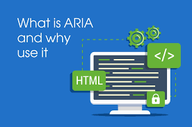

4 Tenets of Web Accessibility
For information and interface components to be perceivable,
they need to be presentable to a user in a way that they can
discern regardless of which senses they do or do not have use of.
The user interface and navigation components of your website
need to be able to be used by everyone, including people who
do not navigate the web using a standard keyboard and mouse.
regardless of ability, people must be able to understand not
only the information in your web content, but also how to navigate
the website to find the information they want, and how to use any
tools or features built into the website.
Your website needs to be robust enough that it supports and can be accessed on a
variety devices, including assistive technologies. This means that as technology
and user agents evolve, the content must still remain accessible, and be able to
be interpreted.

What is ARIA?
- Accessible
- Rich
- Internet
- Applications